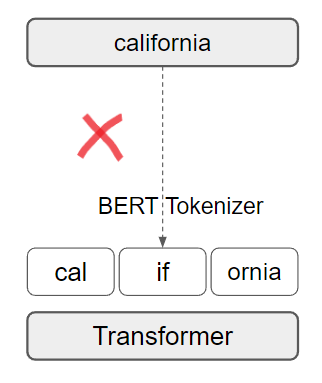

TRANS-KBLSTM : An External Knowledge Enhanced Transformer BiLSTM model for Tabular Reasoning
About
Natural language inference on tabular data is a challenging task. Existing approaches lack the world and common sense knowledge required to perform at a human level. While massive amounts of KG data exist, approaches to integrate them with deep learning models to enhance tabular reasoning are uncommon. In this paper, we investigate a new approach using BiLSTMs to incorporate knowledge effectively into language models.
Through extensive analysis, we show that our proposed architecture, Trans-KBLSTM improves the benchmark performance on INFOTABS , a tabular NLI dataset.
The Tabular Inference Problem
Given a premise table, the task is to determine whether given hypothesis is true (entailment), false (contradiction), or undetermined (neutral, i.e. tabular natural language inference. Below is an example from the INFOTABS dataset:
Here, H1 is entailed, H2 is contradiction and H3 is neutral
Why Knowledge?
Predicting the Gold label correctly requires broad understanding of California is located on the Coast
Challenges and Motivation
The following are the key challenges encountered while working on any tabular reasoning problem:
- Knowledge Extraction
- Knowledge Representation
- Knowledge Integration
◈ Knowledge Extraction
Challenge
KG Explicit (from KNOWLEDGE_INFOTABS) augments the input with With lengthy key definitions that are susceptible to noise and spurious correlations.
Solution: Relational Connections

Semantic Knowledge Graphs represent the relationships between hypothesis and premise token pairs.
To extract relevant knowledge, We use the semantic relational connections between premise and hypothesis tokens.
◈ Knowledge Representation
Challenge

Appending bulky definitions at input introduces unnecessary noise
Solution: Using Sentence Embeddings
Knowledge triples are first converted to sentences (refer to PAPER for more details) and then embedded using Sentence Transformers
◈ Knowledge Integration
Challenge
The main challenge that this work tries to address is the integration of external knowledge word pairs into transformer architecture.
Consider a word pair relation between California and Coast from Conceptnet

If we try to add this relation to transformer, the tokenizer will break apart California into Cal if ornia

Solution: Use BiLSTM Models
BiLSTMs use word level embeddings, hence can easily add word pair relations. In our work we use 300 Dimensional Glove Embeddings

Solution Pipeline
With the solutions prescribed above, we develop an architecture TRANS-KBLSTM
Experimental Results
We observe significant improvements in adversarial ɑ2 and ɑ3 datasets. Further, ablation study indicates all changes are needed, knowledge addition being the most important.
Conclusion
Our proposed pre-processing leads to significant improvements on the INFOTABS dataset and especially beneficial for the adversarial ɑ2 and ɑ3 datasets. The proposed solutions are applicable to question answering and generation problems with both tabular and textual inputs. We recommend that these modifications should be standardized across other table reasoning tasks.
TabPert
You should check our EMNLP 2021 paper which is a tabular perturbation platform to generate counterfactual examples.
People
The following people have worked on the paper "Incorporating External Knowledge to Enhance Tabular Reasoning":

Citation
Please cite our paper as below.
@inproceedings{neeraja-etal-2021-incorporating,
title = "Incorporating External Knowledge to Enhance Tabular Reasoning",
author = "Neeraja, J. and
Gupta, Vivek and
Srikumar, Vivek",
booktitle = "Proceedings of the 2021 Conference of the North American Chapter of the Association for Computational Linguistics: Human Language Technologies",
month = jun,
year = "2021",
address = "Online",
publisher = "Association for Computational Linguistics",
url = "https://www.aclweb.org/anthology/2021.naacl-main.224",
pages = "2799--2809",
abstract = "Reasoning about tabular information presents unique challenges to modern NLP approaches which largely rely on pre-trained contextualized embeddings of text. In this paper, we study these challenges through the problem of tabular natural language inference. We propose easy and effective modifications to how information is presented to a model for this task. We show via systematic experiments that these strategies substantially improve tabular inference performance.",
}Acknowledgement
Authors thank members of the Utah NLP group for their valuable insights and suggestions at various stages of the project; and NAACL 2021 reviewers for their helpful comments. We also thank the support of NSF Grants No. 1801446 and 1822877, and a generous gift from Verisk Inc.